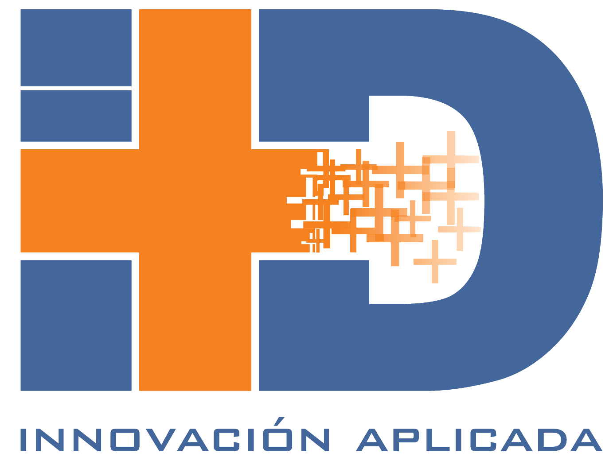

En el mes de agosto de 2016 inicié la Licenciatura en Ingeniería de Software y Sistemas Computacionales en la Universidad DeLaSalle Bajío, en la ciudad de León, Gto., misma que finalicé en junio de 2020; en diciembre del mismo año, presenté el examen CENEVAL, en el cual obtuve un resultado Satisfactorio. Actualmente estoy en espera de mi Título Profesional, por los trámites que este proceso conlleva. En febrero del 2021, inicié un Diplomado en Diseño y Programación de Apps impartido por la Universidad Anáhuac, el cual finalicé en octubre del 2021. Además, tomé una Certificación en Desarrollo de Aplicaciones Móviles de Google. Tengo un dominio avanzado del inglés, y básico del francés. Este último lo estudié en un curso intensivo de un mes en la ciudad de Montreal, Canadá, en junio de 2019.
Idiomas
Lenguajes de programación
Frameworks
Habilidades
Preparación profesional
Universidad De LaSalle Bajío, León, Guanajuato — Ingeniería De Software Y Sistemas Computacionales 2016-2020
Universidad Anáhuac — Diseño Y Programación De Apps 2021-2021
Proactive Productivity — Udemy, 20 de noviembre del 2018
Cursos
Experiencia laboral
Desarrollador iOS Jr en Intercam Banco, hoy Kapital México. Dos proyectos: app legacy en UIKit con patrón VIPER y metodología Ágil; y nueva app bancaria en SwiftUI con Clean Architecture, sistema de diseño distribuido como Swift Package, tasas de cambio en tiempo real vía WebSockets e integración REST cifrada con RSA.
2 años, 5 meses y contando como Desarrollador Jr, desarrollando la Banca Móvil utilizando Swift en Intercam Banco ahora Kapital México Grupo Financiero.
• Un primer proyecto donde se utilizó Git en GitLab como Controlador de Versiones, Jira y posteriormente ClickUp para el manejo de la metodología ÁGIL, conexiones a APIs, uso de librerías de terceros con CocoaPods, framework UIKit en Swift 5.9.2 y versión más reciente de XCode, patrón de diseño VIPER.
• Un segundo proyecto de aplicación bancaria móvil para iOS utilizando SwiftUI y Clean Architecture, organizada en módulos independientes por dominio (presentación, dominio y datos). Construcción y evolución de un sistema de diseño interno distribuido como Swift Package, con componentes visuales reutilizables y tokens de diseño (color, tipografía, espaciado y radios). Implementación de comunicación en tiempo real mediante WebSockets para tasas de cambio de divisas. Integración con servicios REST cifrados con RSA a través de una capa de red centralizada. Migración progresiva de pantallas hacia un nuevo sistema de diseño alineado con la versión web (React + Tailwind CSS). Uso de NavigationStack con enrutamiento centralizado, inyección de dependencias mediante factories y patrones reactivos con Combine y @StateObject / @ObservableObject, apoyándome en herramientas de desarrollo asistido por IA.

Desarrollador Jr en ImasD en cuatro proyectos: app de servicios bancarios con formularios dinámicos y apoyo en Backend/ReactJS; app de telemedicina con videollamadas y planes de pago; portal web para red de Access Points con geo-cercas; y app de transporte público con pagos integrados.
1 año y 7 meses como Desarrollador Jr, desarrollando en 3 proyectos principalmente aplicaciones móviles utilizando Swift y SwiftUI y un proyecto donde brindé apoyo en Frontend utilizando ReactJS en ImasD.
• Un primer proyecto para una empresa privada, a la cual se le desarrolló una solución para contratar servicios bancarios (Créditos, Préstamos, etc.), mostrando formularios dinámicos como Frontend cargados desde un Backend, donde para una 4ta Fase se me solicitó apoyar en la creación de diversos Endpoints; estos creados en un Portal Web en el que podían crear diversos formularios, en el cual también apoyé durante la 4ta Fase del desarrollo utilizando ReactJS; de igual forma se brindó apoyo en la creación de Procedimientos Almacenados para el correcto funcionamiento de los Endpoints creados usando PostgreSQL.
• Un segundo proyecto fue para una empresa privada, a la cual se le desarrolló una solución para el control y gestión de citas con personal de la salud quienes buscaban dar un servicio rápido y a distancia de atención médica y psicológica a través de videollamadas y mensajes realizados dentro de la misma app, para poder hacer uso de esta había una serie de planes de pago para su uso completo, en donde estuve dando soporte a un desarrollador senior para el afinamiento en toda la app.
• Un tercer proyecto para gobierno estatal, al cual se le desarrolló una solución de Portal Web para el soporte de una red de Access Points en una ciudad con el fin de crear geo-cercas, enviar notificaciones usando las geo-cercas creadas o para todos los usuarios conectados en algún punto a esta red, así como un sistema de reportes con la información de notificaciones guardadas o enviadas, en el cual mi papel fue el soporte a un desarrollador senior para la implementación de módulos y corrección de bugs.
• Un cuarto proyecto fue para un gobierno, al cual se le continuó un desarrollo para el control y gestión de pasaje de transporte público, donde el usuario puede visualizar diversas rutas, manejo de tarjetas inteligentes, un módulo para abonar crédito por medio de PayPal, Mercado Libre, Visa y MasterCard, un módulo para generar boleto y poder hacer uso del transporte público, notificaciones personalizadas.
En todos los proyectos se utilizó Git en Azure como Controlador de Versiones, conexiones a APIs, uso de librerías de terceros con Swift Package Manager y CocaPods, utilizando el framework SwiftUI en Swift 5.1 y la versión más reciente de XCode, patrón de diseño VIPER; para desarrollos Web se utilizó ReactJS 18.2, VSCode, y en Backend ASP .Net Core Visual Studio para Mac.
Primer empleo como Desarrollador Jr Swift en Forte Innovation. Dos apps con SwiftUI y patrón MVVM: sistema de gestión de citas para empresa privada y versión móvil de un marketplace existente en web.
1 año como Desarrollador Jr Swift, desarrollando 2 Aplicaciones Móviles con SwiftUI en Forte Innovation.
• En el primer desarrollo fue para una empresa privada, a la cual se le desarrollo una solución para el control y gestión de citas en la cual las personas que iban a alguna cita registran los artículos con los que iban a llegar, llámese equipos de computo, herramientas, etc.
• En el segundo desarrollo fue para Forte, el desarrollo fue la aplicación móvil para un marketplace que ya contaba con página web, y buscaba llegar al publico movil.
En ambos desarrollos se utilizo Git como Controlador de Versiones, conexiones a APIs, uso de librerías de terceros con Swift Package Manager, CocosPods, utilizando el nuevo framework SwiftUI en Swift 5.0 y usando las Betas de XCode 11, en cuanto a patrón de diseño se uso MVVM.